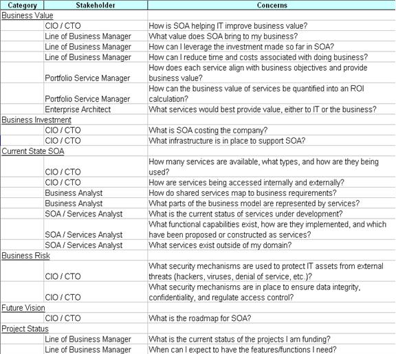
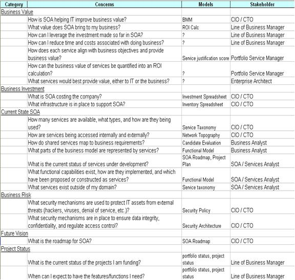
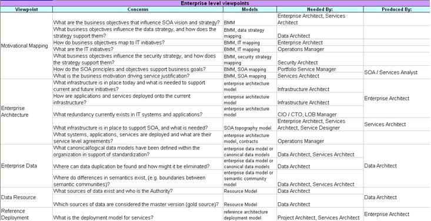
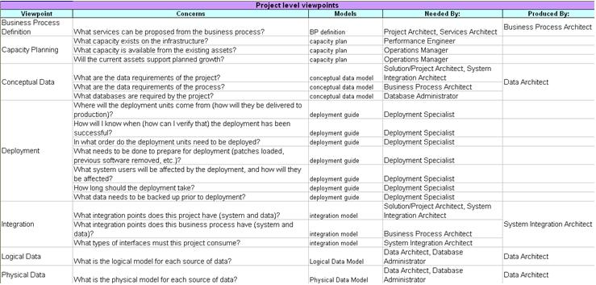

OUM |
Task Overview |
||
Method Navigation |
Current Page Navigation |
||
|
|
||||||||
The purpose of this task is to define the most important models and notation standards (viewpoints) that the enterprise will use. Start by mapping the stakeholder’s concerns into viewpoints that then define which models need to be implemented.
Note: For SOA projects or strategy engagements, a complete service modeling notation is available in OUM. Please refer to the Service Modeling technique for more details.
INIT.ACT.DMCEC Define and Maintain Common Enterprise Concepts
Enterprise Modeling Strategy
This work product is made up of a Viewpoint Library and a Model Library. A viewpoint specifies which models are required to answer the concerns of one or several stakeholders. The Viewpoint Library stores the viewpoints used by the enterprise so that they can be reused across projects. The Model Library stores the various models created by projects so that they can be reused or used as templates for other projects.
You should follow these steps:
No. |
Task Step | Component | Component Description |
|---|---|---|---|
1 |
Review the Business Scope (BA.012) and the Enterprise Stakeholder Inventory (BA.015). | None | |
2 |
Capture stakeholder concerns by category. | Stakeholder Concerns | The Stakeholders Concerns component groups common concerns together and rationalizes them where there are overlaps. Categories could include Business Value, Risk, Project Status, Software Design, etc. Categories may span the entire scope of enterprise architecture and project delivery or be limited to a small subset of concerns, such as those pertaining to a given initiative. |
3 |
Propose models. | Proposed Models List | The Proposed Models List is a list of models by stakeholder concerns. The models represent a way to communicate information to address those concerns. |
4 |
Sort by model and formulate viewpoints. | Candidate Viewpoints | The Candidate Viewpoints is a suggested list of viewpoints to be developed to support the stakeholders concerns. |
5 |
Formalize viewpoints. | Viewpoint Library | The Viewpoint Library Component contains information about each suggested viewpoint. |
6 |
Define detailed model specifications. | Model Library | The Model Library contains information on each model, including the purpose of each model, for which stakeholders it is relevant, how each model will be created, what notations should be used, what elements to include, etc. |
7 |
Construct sample models. | Sample Models | The Sample Models are examples of the type of models in the Model Library. |
Note: Review the definitions of the terms: viewpoint, architectural view, model and concern in the OUM Terms before executing this task.
This task may be executed either using a strategic approach or a tactical approach.
Viewpoint identification and definition is a challenging and subjective activity that requires a consistent approach. Otherwise, an organization will encounter viewpoint sprawl whereby few projects will actually reuse the viewpoints available. This is very similar to the challenges that organizations commonly face for any type of reuse.
It is important to understand the benefits of modeling via a viewpoint approach compared to letting the architect develop the individual models. Here are some of the key benefits:
A viewpoint may be considered a template or formal how-to for describing a particular aspect of the system (that is, a view). This viewpoint is jointly defined and/or selected in an iterative process by the architect and stakeholder together.
What are the relevant viewpoints depends on the enterprise, the domain, the stakeholders and the specific project goals and challenges. Models can serve many purposes – communication, education, analysis, etc.
The steps below describe the process when a strategic approach is chosen. Using a tactical approach you would start considering the viewpoints at the beginning of the project (Implement, RD.003). However, if the enterprise has decided to build and maintain an Enterprise Viewpoint Library, the project should fee back their views to the enterprise (Implement, RD.160), independently from the chosen approach: strategic or tactical.
Using the strategic approach, the first step is to identify viewpoints that address the concerns of the stakeholders identified in Enterprise Stakeholder Inventory (BA.015). This approach should also attempt to benefit from modeling efforts from previous projects and experience of those involved in project delivery.
Review the Business Scope (BA.012) to see what kind of models and viewpoints may be the most relevant to detail the requirements within that scope. Review the Enterprise Stakeholder Inventory (BA.015) to determine what kind of stakeholders will be involved in the various project tasks, and use that as an input to determine what kind of models would be most feasible to use.
Starting with the Enterprise Stakeholder Inventory, identify the different types of concerns that stakeholders have. The intention is to group common concerns together and rationalize them where there are overlaps. Categories could include topics such as Business Value, Risk, Project Status, Software Design, etc. Categories may span the entire scope of enterprise architecture and project delivery or be limited to a small subset of concerns, such as those pertaining to a given initiative.
An example Stakeholder Concerns (by categories) applied to an SOA initiative is shown below.

Once the concerns have been captured and categorized, a list of models is added. The models represent a way to communicate information to address the concerns. At this point, you are only identifying types of models. Later, you will get into more specifics about the models. The intent is to keep the discussion moving at a high level in order to avoid getting bogged down in technical details. On the other hand, to make it more real for all the people present, it usually helps to show some possible examples, either drawn on a drawing board or some previous models from the enterprise. Just ensure people understand the examples are only here to give them a feel of what we are looking for and not prescriptive: they can be detailed and modified in the next step.
If you have a number of models from past projects, review the type of models that have been produced to reflect what kind of stakeholder concerns they have and consider reuse.
The following table lists typical model attributes.
Model Attribute |
Description |
|---|---|
Name |
Unique name for the model |
Description |
High-level description of the model |
Level of Detail |
Examples include Overview, Intermediate and Detailed |
Elements |
Description of the elements in the model |
Notation(s) |
Approved notations that the model can be built with, i.e., UML, BPMN, etc. |
Language |
Any specific language to which the model has to conform, e.g., UML and OCL |
Modeling Techniques |
Any modeling techniques, patterns or analytical methods to be used in "constructing" and "validating" the model |
Presentation Techniques |
Layout guidelines, for instance important actors in the center of the model while customers at the top |
Tools |
List of approved tools to build the model (if any) |
In some cases, a single model can address multiple concerns, while in other cases, it takes more than one model for a single concern. The example below shows a Models column added to the previous Stakeholder Concerns example:
.

There may be cases where a model cannot be identified to address a specific concern. Those cases can be skipped over on this initial pass and handled later. The most important concerns to address are those pertaining to the current IT initiative at hand that this modeling engagement is primarily meant to address.
The models may be described in ordinary modeling terms, such as Class Diagram, Use Case, etc., and may include a level of detail designation, such as Overview, Intermediate, and Detailed. This step will identify business and technical models and therefore involve practitioners from both business and technical backgrounds. The workshops to identify the models may not necessarily address both business and technical models at the same time so each may be lead by someone in the appropriate stream.
Since concerns have been grouped by categories, the models should tend to group together as well. However, there will be cases where models address multiple categories that are spaced apart in the spreadsheet. An easy way to rectify this is to sort the spreadsheet by the model column. This helps to group common models together.
Once the Stakeholder Concerns are sorted by model, the concerns categories are no longer the primary focus. They will be replaced by viewpoint names that are more aligned with the models. The reason for doing this is to make the viewpoints more granular and focused, which makes them more shareable and reusable. A stakeholder can now map to one or more viewpoints, each of which addresses one or more concerns that might be shared by multiple stakeholders.
Viewpoints can further be organized into two groups: Enterprise-Level (or Program-Level) and Project-Level. Enterprise-Level Viewpoints pertain to concerns that span multiple projects and portfolios, such as enterprise architecture and Enterprise-Level Roadmap. Project-Level Viewpoints address concerns of a single project, such as data model and project management. Examples of these are shown below.


The final step is to formalize these viewpoints into a Viewpoint Library. The attributes of each viewpoint should be defined and captured. The following are the recommended data elements that should be captured for a viewpoint:
During the viewpoint definition and identification, a pragmatic and consistent viewpoint classification scheme is required to assist the architect in deciding which viewpoints address the needs of the stakeholders. A viewpoint classification scheme assists architects and others in finding suitable viewpoints given their task at hand, i.e., the purpose that a view must serve and the content it should display. With the help of this classification scheme, it is easier to find typical viewpoints that might be of help in a given situation.
A viewpoint classification scheme gives a quick visual depiction of what a viewpoint addresses. This assists an architect in discovering what areas and concerns a viewpoint addresses. A viewpoint classification becomes more important as a viewpoint library grows.
Drive out the details of the models identified in the previous steps. It is purely a technical step with a strong emphasis on modeling techniques, standards, and tools.
One output from the previous steps is a list of models that are needed in order to address the concerns of key stakeholders. Though the models were identified, they were not defined to a level of detail that would ensure consistency. This step and the following build on the previous steps by adding all the necessary detail.
Start with a workshop to define and capture detailed modeling specifications. For each model identified, the group will consider aspects such as how the models will be created, what notations to use, what elements to include, etc. Essentially this activity is meant to capture information to complete the Model Attributes Table, which was started as part of Viewpoint Modeling. The workshop presentation can also include an overview of the engagement and a summary of what has been completed in the previous phase(s). At the end of the workshop, you should have completed a set of model specifications which will be stored in the Model Library.
Samples provide a good way to visualize the specifications described in the Model Library. In most cases, samples will be available (or easily derived) from previous work. Other cases may require the creation of a sample model to illustrate the specifications. This step can be achieved by assigning people from the customer’s organization the responsibility to provide samples. All samples collected before the Model Library is completed will be included in the document. Samples should be created using the standard tools approved by the customer. This will help to avoid introducing inconsistencies in notations, color schemes, fonts, etc.
This workshop can be an extension of the previous workshop on model specifications since the delivery team and customer participants will likely be the same. The output is a set of Sample Models for the Model Library and/or list of people assigned to create or provide samples.
This Envision work product is a prerequisite touch point to an OUM Implement task(s). You should review the corresponding Implement task(s), to determine information required before the Implement task can begin. The work product produced by this task may become an artifact used by subsequent IT Portfolio Project Implementation engagements.
This task has supplemental guidance that should be considered if you are executing a service based on the BPM Project Engineering view. Use the following to access the task-specific supplemental guidance. To access all BPM Project Engineering supplemental information, use the BPM Project Engineering Supplemental Guide.
This task has supplemental guidance that should be considered if you are performing an engagement using the Service-Oriented Architecture (SOA) Modeling Planning service offering. Use the following to access the task-specific supplemental guidance. To access all SOA Modeling supplemental information, use the SOA Modeling Planning Supplemental Guide.
This task involves the following method roles:
Role |
Responsibility |
% |
|---|---|---|
Enterprise Architect |
Define the models and viewpoints to be developed during the engagement. | 100 |
Customer Enterprise Architect |
Assist with defining the models and viewpoints. | * |
* Participation level not estimated.
You need the following for this task:
Prerequisite |
Usage |
|---|---|
Envision Engagement Strategy (ER.020) Agreed on Envision Engagement Plan (ER.050) |
|
Business Scope (BA.012) |
The Business Scope determines the scope of the engagement and provides an input to determine what kind of models would be most relevant to identify further requirements. |
Enterprise Stakeholder Inventory (BA.015) |
The Enterprise Stakeholder Inventory for the identified Business Scope determines what kind of stakeholders are involved. |
The following techniques are available to assist with this task:
Technique |
Comments |
|---|---|
There are currently no templates available to assist with this task.
Tool |
Comments |
|---|---|
| This document provides touch points (potential inputs) of Envision work products to Implement tasks. |
This section is not yet available.
This section is not yet available.

Copyright © 2006, 2016, Oracle and/or its affiliates. All rights reserved.